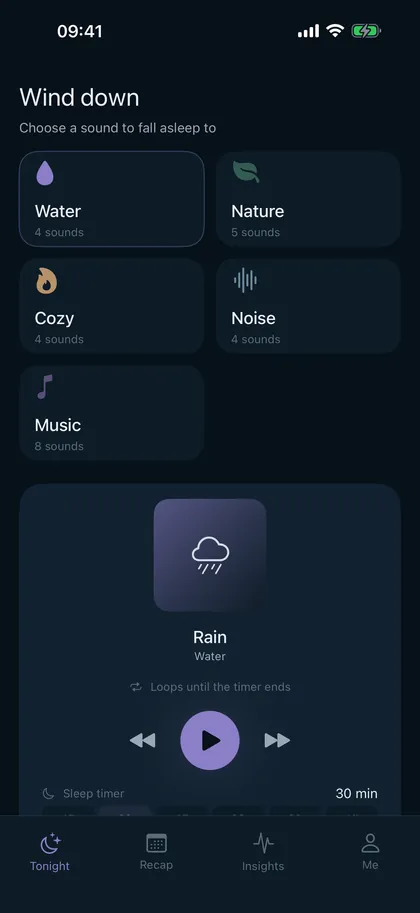
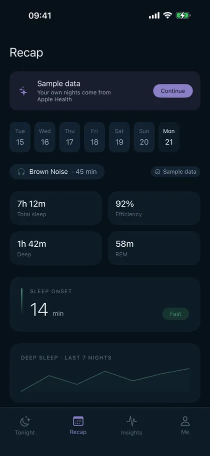
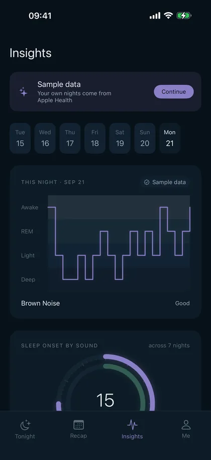
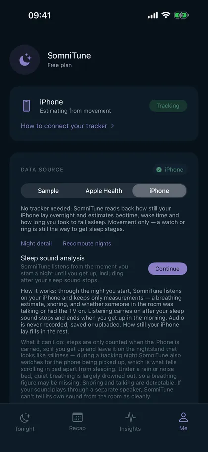

Which sleep sound actually helps you fall asleep faster?
Plenty of apps will play you rain, brown noise or a fan. None of them tell you whether it worked. SomniTune records which sound played at bedtime, reads the night that followed, and puts the two side by side — night after night, until an answer shows up.
The part other sleep-sound apps skip
A sleep-sound app is easy to build and easy to judge on the wrong thing: how big the library is, how nice the loops sound. But the only question that matters at 11pm is whether tonight's choice will get you under faster than last night's did — and the honest answer is that nobody can tell you in advance. The published research on sound and sleep is thin, and where it exists it describes group averages that may point the opposite way for you. We go through that evidence in detail, and it is not flattering to the category.
So SomniTune treats it as a measurement problem instead of a marketing one. Every night you start a sound, the app logs what played and for how long. Every morning it pulls in the night — from whatever actually measured it — and files the two together. After enough nights it can compare sound to sound on your own data: how long you took to fall asleep, how much you slept, how broken the night was.
It is a slow answer. That is the nature of the question: one night tells you nothing, twenty nights start to mean something. What SomniTune does is make sure those twenty nights get recorded instead of forgotten.
Two ways it reads the night
With a wearable
If you already sleep in an Apple Watch, an Oura ring, a Whoop band, a Withings mat or anything else that writes to Apple Health, SomniTune reads the night from Health and uses it as-is. It does not try to second-guess your device. This is the accurate path, and if you have the hardware it is the one to use.
Without one
Most people don't sleep in a watch. So SomniTune can estimate the night from the iPhone on your nightstand: how still it lay overnight, whether it was picked up (which is what separates scrolling in bed from sleeping), and — if you allow it — what the room sounded like, analysed on the device into a breathing estimate, snoring, and whether someone was talking or the TV was on. Audio is never recorded, saved or uploaded; only the measurements survive the night.
What it will not claim
A phone on a nightstand cannot tell deep sleep from REM. Nothing without electrodes or a good wrist sensor can. Plenty of apps print a four-colour stage chart from a phone microphone anyway — SomniTune does not. On the phone-only path you get bedtime, wake time, an estimate of how long you took to fall asleep, and how disturbed the night was. Stages appear only when a real wearable supplied them. Here is what a phone can and can't measure, with the validation studies.
What it looks like




Read before you download
These three pages exist because the honest answers to the obvious questions are more interesting than the marketing ones. They are worth reading even if you never install anything.
62 million TikTok views, zero randomised trials. What the white- and pink-noise research really shows, including the 2026 study where pink noise cost people REM sleep. Which sleep sound works best for you — and how to find out
Fans, rain, brown noise, music. One category has clearly better evidence than the rest, and it isn't the popular one. Plus how to run the test on yourself. Can an app really measure your sleep without a watch?
Partly. Here is what wrist and phone validation studies found, including the number that should make you sceptical of every sleep app, this one included.
Free and Pro
SomniTune is free: the full sound library's core set, the sleep timer, and tonight's recap. SomniTune Pro unlocks the whole library, the per-sound comparison across nights and the long-run insights — the part that actually answers the question. It is €4.99 per month or €39.99 per year, with a 7-day free trial, and it cancels in two taps in the App Store like any other subscription.
There are no ads. Your sleep data is not sold, shared or uploaded; it is processed on your iPhone. The privacy policy is short and says exactly that.
Questions
Do I need an Apple Watch?
No. With a watch, ring or sleep mat the numbers are better, because that is real hardware measuring you. Without one, SomniTune estimates the night from iPhone motion and, optionally, on-device sound analysis. The comparison between sounds still works — you are comparing your own nights to each other, measured the same way each time — but treat the absolute minutes as approximate.
Does it show sleep stages?
Only when your wearable provided them through Apple Health. SomniTune will not print deep-sleep and REM figures that came from a phone on a nightstand, because a phone cannot measure them.
Is the microphone recording me?
No audio is recorded, saved or uploaded. The analysis runs on the device and keeps only derived measurements — a breathing-rate estimate, whether snoring occurred, whether there was talking or a TV in the room. The feature is optional and can be left off; motion-only tracking still works.
How many nights before it tells me anything?
Expect a couple of weeks before a comparison is worth reading, and longer if your bedtimes vary a lot. Sleep onset is noisy — a bad day at work moves it further than any sound will. The point of recording every night is to let that noise average out instead of drowning the signal.
Which sound should I start with?
The one you already like. Then change it deliberately, one at a time, and give each a week. This page walks through how to set the test up so the result means something.